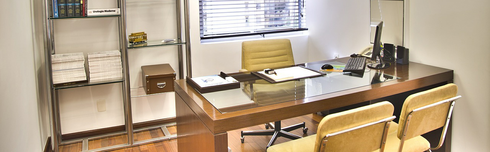

zchq88
导航切换
个人首页
个人作品
网页作品
蓝海密剑
增值服务中心
GITHUB
angularjs学习1.x
个人专栏
其他
都说了是其他了还点!（^-^）

姓名：朱辰卿Name：JordanID：zchq88
WEB前端程序员，c#程序员，图像算法
个人简介
生日：1988/09/26
地址：上海市闸北区彭浦新村
邮箱：zchq88@aliyun.com
个人网页http://zchq88.github.io/
个人技能
个人经历
工作
东航金融
蓝海密剑
项目，部分前端页面，首页图表数据获取展示。
增值服务中心
项目，全部前端页面。整个项目速度优化方案。以及前后端交互接口定义。
2014-11-16
上海洪剑智能科技有限公司
用C语言完成韦根信号接口板开发。
主管工博会中远距离人脸识别和视频人脸检索识别演示项目。
完成了人脸识别更新算法，解决人脸识别更新人脸库的问题。
研发虚拟人防误识策略，减少误识率。
研发清晰度判断算法减少模糊照片带来的误识。
修改识别策略改善识别速度。
WPF重构项目完成界面改观和软件优化。
2011-01-01
教育
上海市应用技术学院
计算机工程专业。
拿过两次奖学金。
优秀毕业设计。
专业课和专业课课程设计几乎全部优秀。
个人成绩下载
2007-09-01
个人能力
学习能力强，随时关注新的科技动态，并且在空余时间尝试提高自己的技能。曾经自己开发android人脸识别软件。高中时候自学并建立论坛网站。
逻辑能力强，可以总体考虑整个项目架构，并会在技术上的提前探路了解，分析项目中的难点要点。做好总体架构。帮助洪剑智能用c# WPF重构整个人脸识别系统。并完成的很多速度上的难点分析和提高。直接提速识别效率5倍以上。
阅读分析能力强，只要可以看到代码就会分析和修改，能快速找到需要修改的代码，并且分析写法利弊学会并在以后为己用。在刚加入东航蓝海密剑项目一周就上手修改和开发新功能。
知识面广，由于个人经历关系，在硬件，软件，机械方面都有一定的了解。时常关注科技动态和经常在空余时间帮助好友他们的问题，所以会在各方面都有一定的接触。在洪剑实习是硬件开发，在硬件空余时刻协助软件开发，成功掌握整个项目软硬件，并很好的承担了项目中软硬件交流和整个项目的方案设计。解决光照曝光问题上考虑软硬件更优的解决方法并解决。
经历丰富，在高中获得
上海市跆拳道教练证书
并在高中业余时间任职2年跆拳道教练。也有在高中帮老师制作公开课视屏，自己在玩游戏的时候修改和破解游戏内容，曾修改文曲星中游戏。用RPG制作大师制作自己高中的游戏。大学期间参加
诺基亚互联网百万富翁
进入前20名。并在当年获取
"诺基亚WIDGET大闯关"
（官网链接已失效）游戏编程第一获得N95 8g。